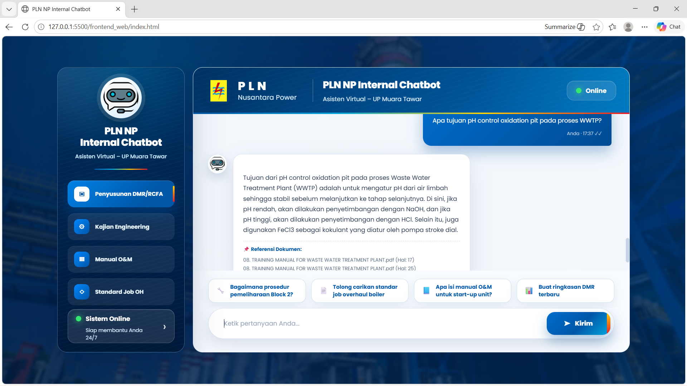
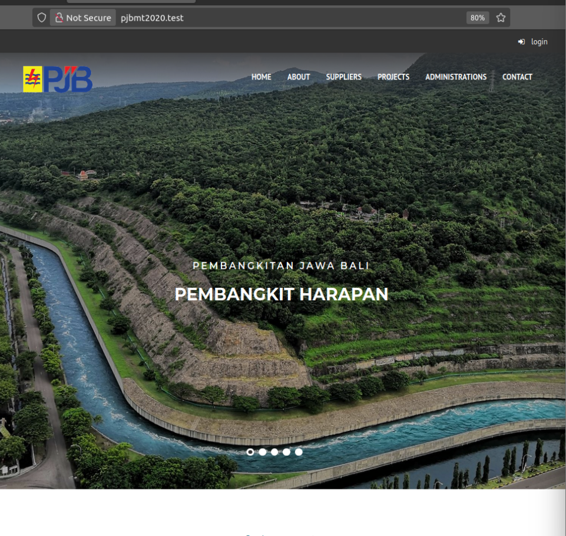
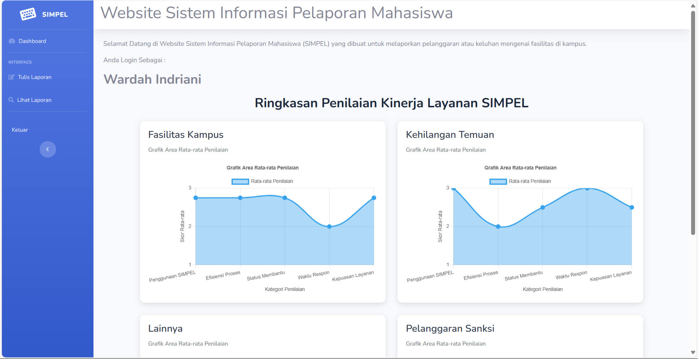
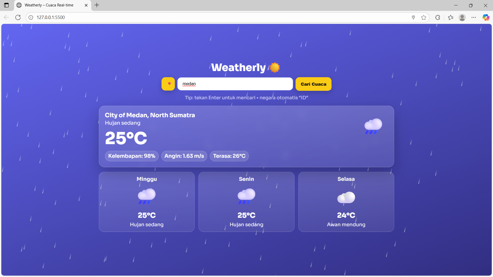
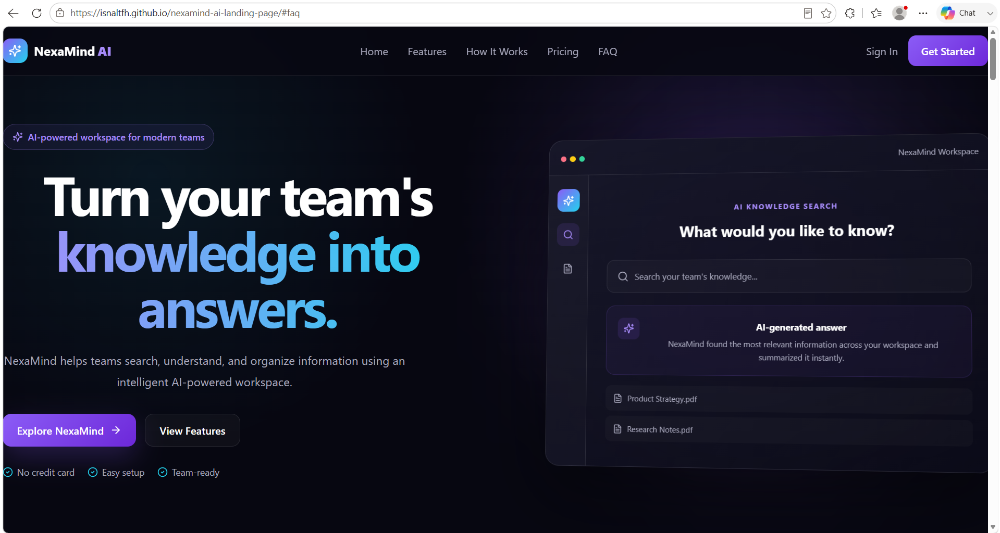

Software Engineering
- Developing backend services and REST APIs using Python, FastAPI, PHP, and Laravel.
- Integrating databases, internal services, and AI components into maintainable applications.
WELCOME TO MY PORTFOLIO
Fresh graduate in Informatics Engineering with hands-on experience in software development, frontend development, IT support, and Linux-based system deployment. Completed a six-month placement at PT PLN Nusantara Power while developing an internal RAG chatbot as a final project.
 Fresh Graduate in Informatics Engineering
Fresh Graduate in Informatics Engineering
I am a fresh graduate in Informatics Engineering from
UIN Syarif Hidayatullah Jakarta
,
graduating with a
GPA of 3.58/4.00 and Cum Laude distinction
.
I gained hands-on industry experience through two engagements
at PT PLN Nusantara Power UP Muara Tawar. During my internship,
I supported daily IT operations, configured workstations,
troubleshot hardware, software, and network issues, and
contributed to the continued development of an internal
procurement application.
For my final project, I developed, evaluated, and deployed an
internal Retrieval-Augmented Generation (RAG) application using
Python, FastAPI, ChromaDB, BAAI/bge-m3, Ollama, Linux, Nginx,
and systemd. The project strengthened my experience in AI
application development, system integration, troubleshooting,
and Linux-based deployment.
I am currently pursuing opportunities in Software Engineering,
Generative AI / RAG Development, Frontend Development, and
IT Support.
Technical Skills
Python, JavaScript, PHP, HTML, CSS, and SQL.
FastAPI, Laravel, React.js, Vite, and Tailwind CSS.
RAG, ChromaDB, Ollama, Qwen2.5, Mistral, BAAI/bge-m3, and MySQL.
Linux, Ubuntu, Nginx, systemd, VMware, Git, GitHub, VS Code, and Postman.
My Works

Designed and deployed an internal Retrieval-Augmented Generation chatbot as a final project during a six-month placement at PT PLN Nusantara Power. Built the FastAPI backend, ChromaDB retrieval pipeline, document references, request cancellation, and Linux deployment using Nginx and systemd.

Contributed to an internal procurement and administrative application using Laravel and MySQL. Worked on data workflows, backend controllers, reporting, and application maintenance to support operational processes.




Professional Journey
Developed, evaluated, and deployed an internal Retrieval-Augmented Generation (RAG) application for technical-document retrieval.
Supported daily IT operations while contributing to internal application development and infrastructure troubleshooting.
Coordinated participant management and event operations for an inter-campus company visit involving 50+ participants, covering registration, logistics, digital publication, and external communication.
Supported technology programs that contributed to GDGOC UIN Jakarta being recognized as #1 Most Active Chapter and #1 Most Impactful Chapter in Indonesia, delivering 55 events and engaging 500+ partners and members.
Bachelor of Informatics Engineering
GPA: 3.58/4.00 — Cum Laude